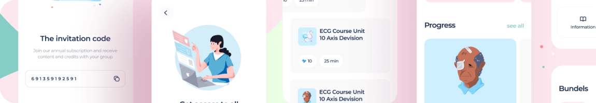

Самые свежие проекты
Смотреть все проектыМои компетенции
-

HTML и CSS
Это основа фронтенд разработки. Умение создавать и правильно структурировать HTML-документы, а также применять стили к этим документам на CSS, является обязательным навыком для каждого фронтенд разработчика.
-

JavaScript
Это язык программирования, который используется для создания динамического и интерактивного пользовательского интерфейса. Хороший фронтенд разработчик должен быть знаком с основами JavaScript, включая работу с DOM-деревом, асинхронными запросами и манипуляцией данными на стороне клиента.
-
Работа с библиотеками и фреймворками
Фронтенд разработчики должны быть знакомы с различными библиотеками и фреймворками, такими как React, Angular, Vue и другими. Умение использовать готовые решения, адаптировать их под нужды проекта и расширять их функциональность, является очень важным навыком.
-

Разработка для мобильных устройств и адаптивная верстка
Знание специфики мобильной разработки является неотъемлемым навыком для любого современного фронтенд-разработчика. Мобильный трафик составляет 64.87% от общего объема трафика по статистике за 2022 год и имеет тенденции уверенного роста.
Помогаю решать широкий спектр задач
-

Разработка сайта под ключ
Это создание дизайн веб-сайтов, созданный для удобства пользователя и решения бизнес-задач Сайты должны быть понятными и удобными, ведь чем понятнее сайт, тем быстрее пользователь совершит целевое действие
-

Верстка сайтов
Это процесс создания HTML-документов и применения к ним стилей на CSS. Фронтенд разработчик может помочь создать привлекательный и удобный интерфейс для вашего сайта
-

Разработка мобильного интерфейса
Это процесс создания интерактивных элементов на странице с помощью JavaScript. Фронтенд разработчик может помочь создать динамический и удобный пользовательский интерфейс для вашего сайта или приложения.